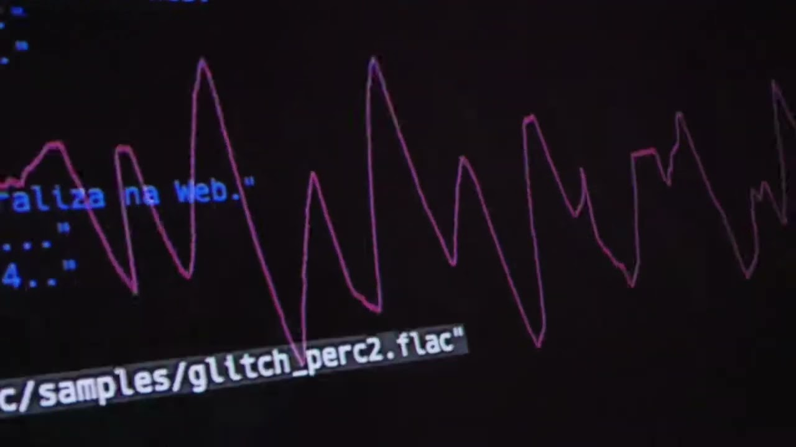

emoção artificial
artificial emotion
Alexandre Rangel, 2018Sistema de software que lê as notícias de jornais e sonifica o resultado sem nenhuma interpretação lógica; só emocional. Feito com software livre de programação ao vivo Sonic Pi.
Software system that reads the news and sonifies the result without any logic interpretation; only emotion. Made with Sonic Pi live coding software.

"Emoção Artificial"
Alexandre Rangel, 2018Exposição "A/RISCADO: Arte, Ciência e Tecnologia"
Museu Nacional de Brasília, Brasília
Catálogo Exposição A/RISCADO >
"Artificial Emotion"
Alexandre Rangel, 2018Work shown at expo "A/RISK: Art, Science and Technology"
Nacional Museum of the Republic, Brasília
A/RISCADO Exposition catalog >